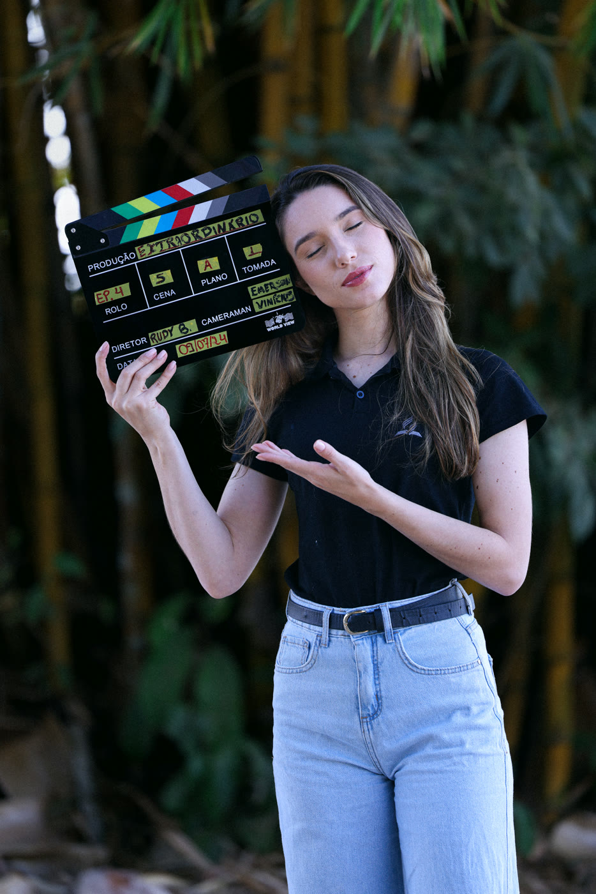
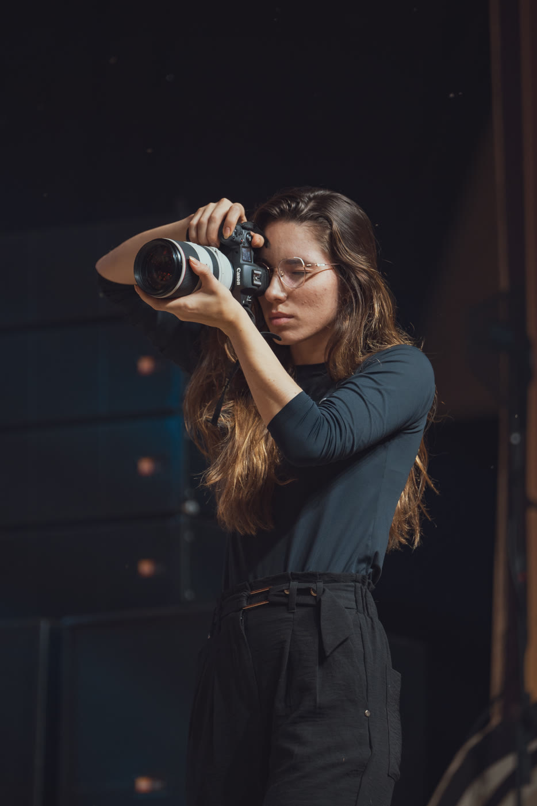
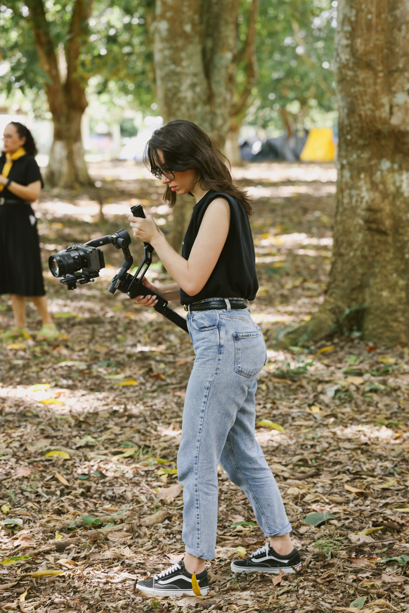
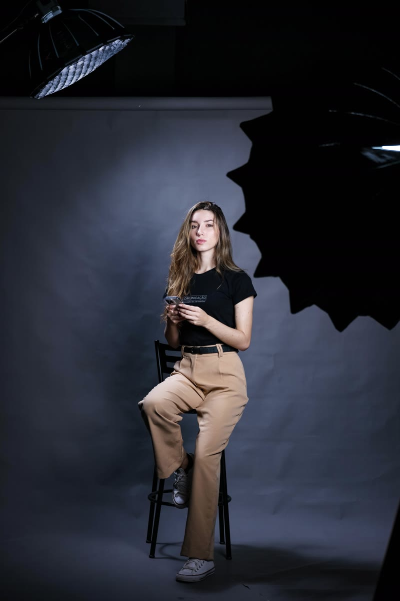

Portfólio audiovisual
Débora Knupp
Transformo ideias em histórias, campanhas e conteúdos que conectam pessoas. Trabalho com comunicação de forma estratégica e criativa, acompanhando projetos desde o conceito até a execução.
Áreas de atuação
- Produção audiovisual
- Fotografia
- Roteiros
- Captação de vídeo
- Social media
- Direção de arte



- 0projetos entregues
- 0visualizações geradas
- 0de experiência
01 — Trabalhos em
Destaques
Premiado pelo Cine RO na categoria: melhor filme a voto popular. Ver a matéria
02 — Fotografia
Galeria
04 — Sobre
Débora Knupp
“Descobri no campo missionário uma paixão por comunicar Jesus.”

Tenho 25 anos, sou apaixonada por missões, voluntariado e por estar em meio à natureza. Gosto de aprender novos hobbies e de me aventurar em trabalhos manuais, como bordado, pintura e culinária.
Minha história com a comunicação começou durante um trabalho voluntário no Amazonas. O que surgiu como uma necessidade daquele momento acabou revelando algo que eu realmente gostava de fazer: contar histórias e aproximar pessoas por meio delas.
Desde então, sigo aprendendo e encontrei na comunicação uma forma de unir muitas das coisas que fazem sentido para mim: pessoas, propósito, criatividade e histórias reais.
05 — Contato
03 — Social media
Planejamento e execução
Antes e depois
Perfil 1
Perfil 2
Perfil 3